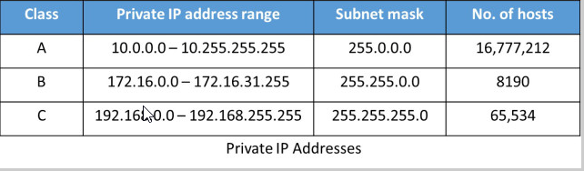

ipconfig-windows
ipv4 and ipv6 2 types of addresses there
ipv6 in hexadecimal notation
ipv4 is basically 4 bytes long or rather 32 bits
ifconfig-kali/mac
(inet:diisplays the ip address)
called inet and inet6 respectively

anything starting with a 192 is not an ip address that is going to be out in the interweb they are private ip adresses


ip addresses from 192.168.0.0 to 192.168.255.255 are used for small business and household purpose and u get hosts upto 254 means can connect 254 devices at once on this ip address
Class A is used for big businesses and anything outside these three classes falls un public ip address which u have to buy or rent from ur isp(internet service provider)
ip addressses are layer 3 protocols and layer 3 is a router
when u route traffic you route via an ip address